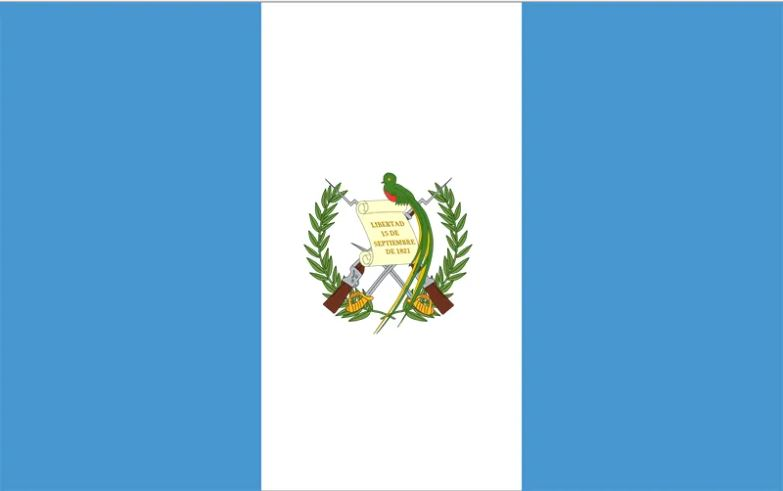
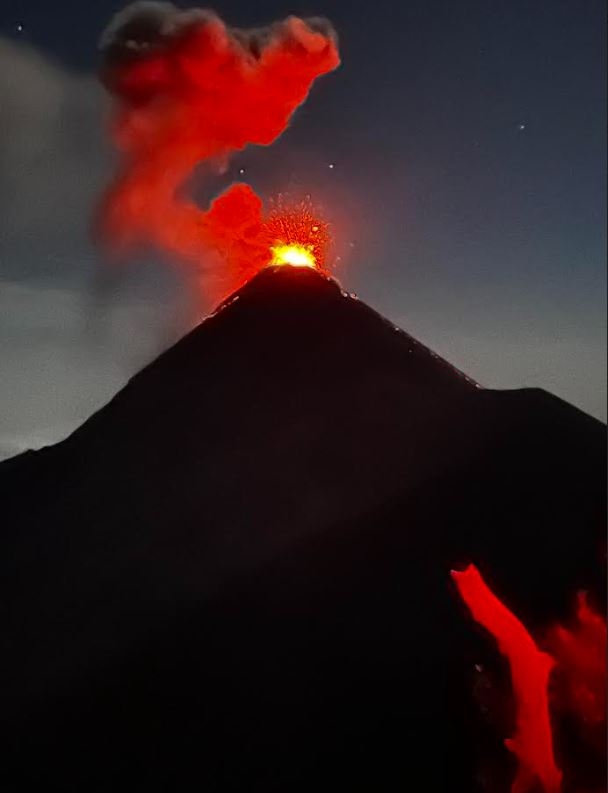
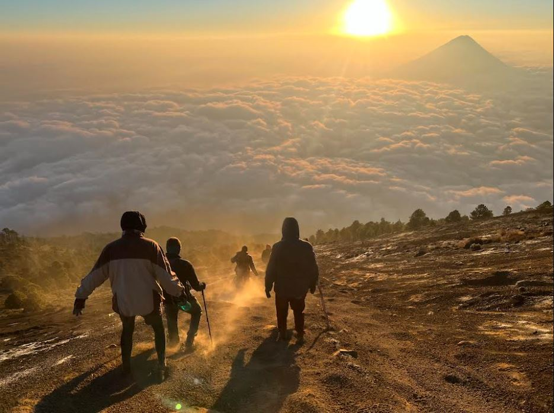
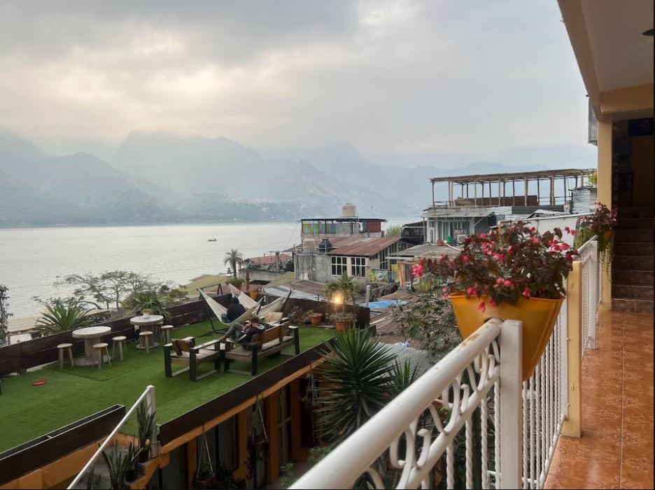
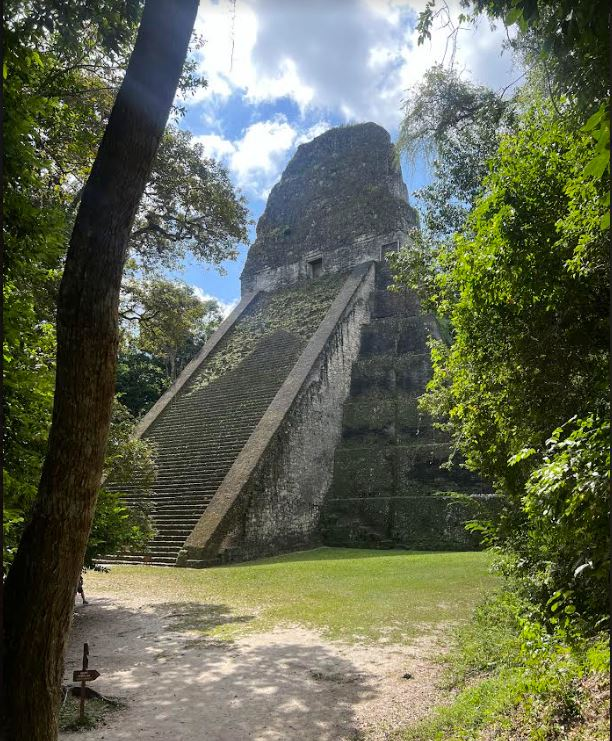
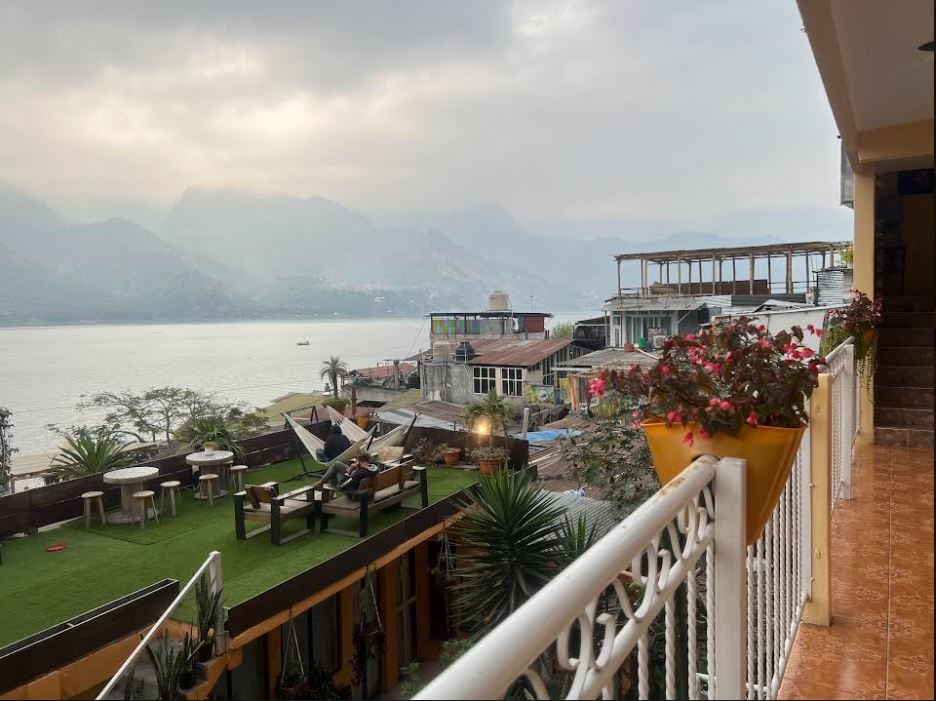
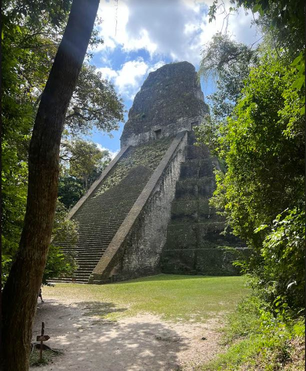

Guatemala
 Buenos dias! This was a backpack packing and hostel trip in March of this year with my friend, Sam. What an adventure! We started at the north side of the country and made our way south, seeing what seemed like all the sites! We even had an overnight layover in Mexico City both directions as a bonus.



 



Top Destinations
- Volcan Acatenango - Absolutely without a doubt, the most amazing thing I have ever seen in my life! An erupting volcano in the dark of the night accompanied by an explosion that makes a gunshot sound like poprocks!
- Rio Dulce - A peaceful town near Lake Izabal where you can chill on the lake shore, or hike in to the hot springs and play in the volcanic muds! *BONUS* Almost no tourists on this side of the country!
- Tikkal - Marvel at the ruins of the Mayans with only 5% of the tourists you will encounter at Chichen Itza. There is an amazing lookout where you can see all 3 towers from the top of another. It looked like a video game!
- Antigua - Spanish architecture, fun nightlife, and surrounded by volcanoes! My favorite thing was having drinks at a rooftop bar and gazing at the bougainvilleas and clouds encircling the mountians.
- Semuc Champey - Emerald pools waterfalling into one-another in the middle of the jungle....crystal-clear water and a rough ride out to the site in a cattle truck!
- Lago Panajachel - A large and peaceful lake surrounded by mountains. And a good place to get souvenirs, if you so please.